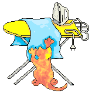

El trailer de tu personaje favorito

Batalla epica
Momentos épicos de Angela
¡Así se gana!
Un universo lleno de animales increíbles
En Mobile Legends hay héroes que son como los animales que te encantan. Hay un oso adorable, un leopardo ágil y hasta un panda que usa un bambú gigante. ¡Es el juego perfecto para alguien que ama a las mascotas en la vida real y también en el mundo virtual!
Mis héroes favoritos con forma de animal:
- 🐾 Akai 🐾: Un oso panda tierno pero poderoso, que es de mis favoritos.
- 🐾 Masha 🐾: Una heroína con el espíritu de un oso que pelea sin rendirse.
- 🐾 Sun 🐾: Un rey mono que puede crear clones para ayudarte a ganar.
- 🐾 Wanwan 🐾: ¡Mi heroína favorita! Es como una gatita ágil que salta y lanza dardos para ganar.